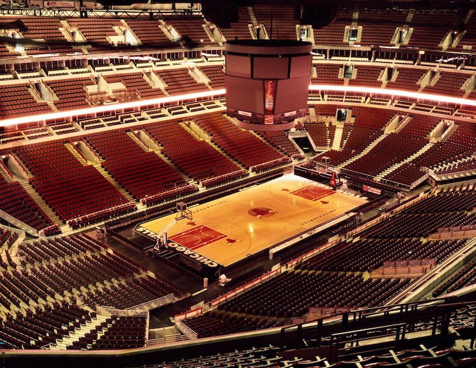

Chicago Bulls - Fundado em 1966, o Chicago Bulls rapidamente se tornou um dos times mais icônicos da NBA. Durante os anos 90, liderado por Michael Jordan e com o técnico Phil Jackson, o Bulls conquistou dois tricampeonatos consecutivos (1991-1993 e 1996-1998), somando seis títulos da NBA.
Após a era Jordan, a equipe teve altos e baixos, chegando a retomar uma boa fase em 2011 com Derrick Rose, MVP da liga, mas lutas com lesões impediram o retorno ao topo. Atualmente, o time está em reconstrução, buscando nova competitividade com jovens talentos.
Elenco - Zach LaVine (#8), DeMar DeRozan (#11), Nikola Vučević (#9), Coby White (#0), Patrick Williams (#44), Josh Giddey (#3), Andre Drummond (#3), Alex Caruso (#6).
Títulos NBA - 6 (1991, 1992, 1993, 1996, 1997 e 1998)
Títulos Conferência - 6 (1991, 1992, 1993, 1996, 1997 e 1998)
Estádio - United Center - (19.717)
